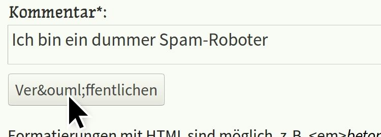

Auf dieser Website ist Platz für das, wofür mein Twitterprofil @charakterziffer nicht ausreicht. Mein Blog ist als Plus zu meinen Tweets gedacht, eben „@cz+“. // Die letzten drei Artikel:
Etwa seit einem Vierteljahr bekomme ich in meinem Blog fast täglich Kommentare. Das würde mich sehr freuen, wenn es nicht unerwünschte Werbe-Einträge wären. Als Mail erhalte ich dann zum Beispiel folgenden Kommentar:
post_id: /sommerzeit
date:
name: Kredit-Heinz
link: http://kredit.tld/
comment: Toller Blogartikel, bitte schreib noch mehr zu diesem interessanten Thema. Für eine schnelle Geldspritze besuche <a href="http://kredit.tld/">unsere Kreditvergabe</a> und kassiere sofort! Jetzt auf <a href="http://kredit.tld/">http://kredit.tld/</a>
Solche Spamkommentare pflege ich in mein Blog gar nicht erst ein, sondern lösche sie direkt aus meinem Postausgang. Kürzlich ist mir aber etwas aufgefallen, dass mir die Arbeit in Zukunft erleichtern könnte. Normalerweise sieht eine Mail mit einem handgetippten Kommentar nämlich so aus:
post_id: /kommentarspam
date: 9.10.2018, 15:21:17
name: Jana Vogelsang
link: https://jana-bloggt.de/
comment: Das mit dem Kommentarspam kenne ich. Ich habe jetzt ein CAPTCHA eingefügt, seitdem bekomme ich keinen Spam mehr. Vielleicht ist das eine Lösung für dich?
Im Vergleich mit den Werbekommentaren sind mir zwei Unterschiede aufgefallen.
Werbespammer verwenden kein JavaScript
Zunächst steht im Spamkommentar kein Datum. Ich füge es nämlich automatisch mit der Programmiersprache JavaScript ein, wenn im Kommentarformular die Schaltfläche „Veröffentlichen“ angeklickt wird. Die Werbespammer scheinen JavaScript nicht auszuführen.
Theoretisch könnte ich also ein Script schreiben, so dass man nur kommentieren kann, wenn JavaScript aktiv ist. Ich könnte die Kommentareingabe zunächst unsichtbar machen und erst per JavaScript einblenden. Dann können Spammer das Feld gar nicht ausfüllen …
Praktisch hat JavaScript aber einen Haken: Es gibt nämlich Leute, die JavaScript absichtlich abgeschaltet haben. Sie haben möglicherweise Sicherheitsbedenken, möchten Web-Tracking einschränken oder verwenden einen Browser, der JavaScript nicht nutzt (z.B. LYNX). JavaScript wäre also auch eine Hürde für einige richtige Leser.
Aus demselben Grund verzichte ich in meinem Kommentarformular übrigens auf sogenannte CAPTCHAs. Das sind kleine Zusatzaufgaben, die für Menschen recht einfach sein sollen, für Spamroboter aber schwierig lösbar sind; beispielsweise einfache Rechenaufgaben („Wie viel ist 2nbsp;+nbsp;5?“) oder ein Bild, in dem man Buchstaben erkennen soll. Ich möchte aber, dass es möglichst einfach ist, in meinem Blog seine Meinung zu äußern – ohne sich vorher mit einem bescheuerten CAPTCHA beschäftigen zu müssen.
Werbespammer verstehen keine HTML-Entitäten
Das zweite, was mir an den Spamkommentaren aufgefallen ist, war die (oben vor name). Das ist eine HTML-Entität (“HTML Entity”), eine spezielle Schreibweise, die normalerweise jeder Internetbrowser versteht und richtig interpretiert. Im Quelltext einer Website kann man bestimmte Sonderzeichen anders eingeben, damit sie nicht falsch dargestellt werden. Statt einem € kann man € schreiben, statt ä ein ä. Und weil ich wollte, dass in den Kommentarmails vor dem Namen eine Leerzeile steht, habe ich hier ein eingefügt: das Zeichen für eine leere Zeile.

Spamroboter können offensichtlich keine HTML Entities interpretieren. Aus „Veröffentlichen“ machen sie kein „Veröffentlichen“ (Symbolbild).
Im Spamkommentar fehlt die Leerzeile und die HTML Entity bleibt stehen. Warum das so ist, weiß ich nicht genau. Ich vermute, für Werbekommentare werden kleine Programme verwendet, die das Internet automatisch nach Kommentarfeldern durchsuchen. Dann überfliegt das Programm die Namen der Textfelder, kopiert seine Werbenachricht hinein und schickt die Eingaben ab. Bei diesem Prozess kommt zu keiner Zeit ein richtiger Webbrowser zum Einsatz (wie Firefox, Safari, Opera oder Chrome) – der würde die HTML-Entitäten nämlich in die entsprechenden Sonderzeichen umwandeln.
Unkomplizierter, barrierefreier Spamschutz
Kann man diese Unfähigkeit der Spamroboter nicht als Abwehrtechnik gegen sie einsetzen? Wie sorge ich dafür, dass ein Kommentar nur abgeschickt werden kann, wenn HTML-Entitäten richtig interpretiert werden? Natürlich bringt es nichts, wie oben im Bild einfach den Text auf der Veröffentlichen-Schaltfläche zu ändern, ein Spamprogramm findet den Knopf trotzdem. Aber wie wäre es, den Werbekommentar einfach an eine falsche Adresse weiterzuleiten?
Mein Kommentarformular wird von dem Anbieter Onlex verarbeitet. Ich leite die Eingaben an eine Adresse wie https://www.onlex.de/_formmailer.php weiter und bekomme sie dann als Mail. Was, wenn ich die Adresse im Formular mit einer HTML-Entität spicke, zum Beispiel https://www.onlex.de/_formmailer.php? Das : ersetzt den Doppelpunkt, sollte von echten Browsern aber wieder zurückverwandelt werden. Ein Spamprogramm bekommt nach dem Abschicken seines Kommentars dagegen eine Fehlermeldung: Adresse nicht gefunden. So wird kein Kommentar verschickt und der Werbemüll landet im Nirgendwo.
Update 12. August 2018: Nachdem ich die Methode drei Wochen getestet hatte und es auffällig ruhig geworden war, scheint die Adressverschleierung seit vier Tagen nicht mehr zu funktionieren. Zwar stehen in der Kommentarmail immer noch HTML Entities, innerhalb der Absenderadresse können sie die Spammer aber wohl doch auflösen. Nun ja, dann bleiben die Spamkommentare halt im Mailfilter hängen.
Weiß jemand mehr über Spamroboter und HTML-Eintitäten? Auch ein einfacher Link zu weiteren Infos wäre hilfreich. Ich konnte nichts dazu finden, kann mir aber nicht vorstellen, dass noch niemand diese einfache Spambremse entdeckt hat. Oder gibt es normale Browser, bei denen mein Spamschutz Probleme verursacht? Freue mich über ergänzende Kommentare!
Auf der Website der EU-Kommission kann jeder noch bis 16. August 2018 an einer Umfrage zum Thema Sommerzeit teilnehmen. Falls einem die Zeitumstellung nicht gefällt, kann man auch angeben, ob man die Sommer- oder Winterzeit bevorzugt. Das Interesse am Thema Zeitumstellung scheint groß zu sein, jedenfalls war die Umfrage in den ersten Tagen vor lauter Seitenaufrufen kaum erreichbar.
Woher diese Umstellung?
Die Geschichte der Sommerzeit ist abwechslungsreich. Zum ersten Mal auf Sommerzeit umgestellt wurden die europäischen Uhren am 30. April 1916 im Deutschen Reich. Man wollte während des Ersten Weltkriegs an den langen Sommerabenden Energie sparen. Andere europäische Länder zogen gleich. Nach dem Krieg wurde die Zeitumstellung wieder abgeschafft, im Zweiten Weltkrieg wieder eingeführt, danach wieder abgeschafft, während der Ölkrise 1973 wieder eingeführt. Seit 1996 läuft die Sommerzeit einheitlich in der Europäischen Union vom letzten Sonntag im März bis zum letzten Sonntag im Oktober.
Das Argument mit der Energie-Einsparung galt übrigens schon 1974 als fragwürdig. Dafür ergeben sich durch die Zeitumstellung so einige Probleme.
Vieles gerät durcheinander
Meine Oma war Bäuerin und musste schon Wochen vor der Zeitumstellung ihre Kühe umgewöhnen. Jeden Tag wurde ein paar Minuten früher bzw. später gemolken, damit die Tiere sich langsam auf den früheren/späteren Zeitpunkt einstellen konnten. Ich weiß nicht, wie heutige Bauern oder Viehbetriebe das machen, in den 1970ern war es ein sehr starkes Argument.
Mittlerweile stellen sich viele Uhren automatisch um, aber längst nicht alle. So muss man zweimal im Jahr selbst Hand anlegen und an den Zeigern drehen. Nicht zu vergessen die Fotokameras, Mikrowellen und andere Kleingeräte.
Die zusätzliche bzw. verschwundene Stunde bringt natürlich auch den Verkehr durcheinander. Fernbusse kommen im Frühjahr unverschuldet eine Stunde später an, Nachtzüge machen im Oktober eine unnötige Pause. Für Arbeiter in der Nachtschicht ist es ähnlich: Da fehlt der Krankenschwester die Stunde zum Tablettenrichten oder die Wache dauert 60 Minuten länger. Zum Glück nur zweimal im Jahr.
Und schließlich fällt es vielen Menschen schwer, sich an eine neue Aufstehzeit zu gewöhnen, der gewohnte Rhythmus wird gestört. Im entsprechenden Abschnitt des Wikipedia-Artikels zur Sommerzeit sind Studien verlinkt, die gesundheitliche Auswirkungen der Zeitumstellung festgestellt haben.
Mit der Sonne wach sein
Wenn schon keine Energieeinsparung, was haben wir denn dann eigentlich von der Sommerzeit? Nun, sie gleicht das vorhandene Tageslicht an unsere Wachzeit an. Überlegt mal, wann ihr in etwa aufsteht, und wann ihr zu Bett geht. Es wäre doch gut, wenn ungefähr in dieser Zeit auch die Sonne scheint, oder? Vielleicht mit einer Tendenz dazu, dass es lieber morgens hell ist (um gut aus dem Bett zu kommen) als abends (weil man da bei Zimmerlicht noch gut zurechtkommt).
Ich habe mal drei Städte in Europa verglichen, nämlich Helsinki (weit im Nordosten, Finnland), Regensburg (meine Heimat, recht mittig) und Faro (südwestlich, Portugal). Folgendes Diagramm verdeutlicht die Sonnenaufgangs- und -untergangszeiten:
In Helsinki schwankt der lichte Tag zwischen 9:23–15:12 Uhr (Winter) und 3:53–22:49 Uhr (Sommer). Regensburg hat im Winter Tageslicht von 8:02–16:16 Uhr, im Sommer von 5:07–21:19 Uhr. In Faro liegen Sonnenaufgang und -untergang zwischen 7:41–17:18 Uhr (Winter) und 6:12–20:54 Uhr (Sommer). Jeweils mit Zeitumstellung. Datenquelle:Time and Date, wo es sehr verständliche Jahresdiagramme gibt.
Jeder Balken in der Abbildung steht für die 24 Stunden von Mitternacht bis Mitternacht (von links nach rechts). Am oberen Rand jedes Balkens stehen jeweils die Sonnenzeiten vom 21. Dezember (kürzester lichter Tag), am unteren Rand die Sonnenzeiten vom 21. Juni (längste Sonnenscheindauer). Die Zacke in der Mitte jedes Balkens ist der letzte Sonntag im März: Hier wird die Uhr eine Stunde vorgestellt, der lichte Tag verschiebt sich nach rechts.
Praktisch vermindert die Zeitumstellung die Schwankungen des Sonnenaufgangs, verlängert den lichten Tag dafür zum Abend hin. Während der Normalzeit („Winterzeit“) wird es morgens einigermaßen früh hell. Dank Sommerzeit kommt das verfügbare Licht dann dem langen Abend zu gute, statt es um vier Uhr früh „verleuchten“ zu lassen.
Das hab ich nun davon
Zugegeben, die Umstellung der Uhren im März und Oktober nervt wirklich. Man sollte aber auch nicht vergessen, was jeder durch die Zeitumstellung gewinnt: Einigermaßen helle Wintermorgen und eine möglichst spät beginnende Sommernacht. Ob das den Aufwand wert ist?
Im Süden Europas hat die Zeitumstellung übrigens gefühlt einen stärkeren Effekt: Der Zeitpunkt des Sonnenaufgangs bleibt ungefähr gleich, während man abends deutlich an Licht gewinnt. In Europas Norden schwankt die Tageslänge dagegen insgesamt so stark, dass die eine Stunde zusätzlich kaum ins Gewicht fällt.
Man kann nicht fünf Wölfe und ein Schaf über das Abendessen abstimmen lassen.
Dieses Zitat stammt vom amerikanischen Verleger Larry Flynt. Er ergänzt: „Das Mehrheitsprinzip funktioniert nur dann, wenn die Rechte von Einzelnen berücksichtigt werden.“
Ich bin allgemein recht skeptisch, welches Gewicht die Meinung einer Mehrheit haben sollte. Natürlich erkennt man eine gewisse Tendenz, wenn ein großer Anteil von Personen sich für eine bestimmte Entscheidung ausspricht. Das bestätigt aber noch lange nicht, dass dies auch die fairste Lösung oder zutreffendste Antwort ist. (Besonders eine knappe Entscheidung sagt für mich vor allem aus, dass nicht ausreichend über die eigentlichen Wahlmöglichkeiten nachgedacht wurde.)
Gerade in Zeiten von Social Media lassen sich Mehrheiten leicht mit populistischen (Falsch-)Behauptungen gewinnen; oder die Einhelligkeit einer Meinung wird von organisierten Trollgruppen nur vorgespiegelt (Stichwort 50 Cent Army). Der Mehrheit kann auch schlicht das nötige Wissen oder die Empathie für Betroffene fehlen, um eine informierte, gerechte Entscheidung zu treffen.
Wenn nicht auf Mehrheiten, sollte man sich dann zum Beispiel auf bekannte, hochrangige Meinungsführer verlassen? Das finde ich auch nur bedingt. Sowohl kann großer Unsinn von wichtigen Personen kommen (muss ich hier Donald Trump erwähnen?), als auch brillante Betrachtungen von Leuten mit zweifelhaftem Ruf (der oben genannte Larry Flynt produziert vor allem pornografische Magazine). Und nun?
Logisches Argument
Ich glaube sehr an Argumente. Im Deutschunterricht habe ich Erörterungen noch gehasst, doch mittlerweile bin ich froh, dabei das Handwerkszeug zum Argumentieren beigebracht bekommen zu haben. Zur Erinnerung, ein Argument besteht aus Behauptung, Begründung, Beispiel und einer abschließenden Folgerung. Praktisch umgesetzt:
(Behauptung)Auch prominente Personen treffen nicht unbedingt die beste Entscheidung zum Wohle aller. (Begründung)Jeder, egal wie bekannt, hat Überzeugungen, Interessen, Voraussetzungen und bestimmte Informationen zur Verfügung. Wie umfassend und objektiv diese sind, hängt nicht vom Bekanntheitsgrad einer Person ab, sondern zum Beispiel von deren Interessen, kulturellem Hintergrund und ihrer Bildung. (Beispiel)Beispielsweise schlägt der sehr bekannte Präsident Donald Trump keine wirksamen Gegenstrategien vor, um Schießereien in Schulen zu vermeiden. Auffälligerweise ist Donald Trump von starkem Wirtschaftsglauben geprägt (Deregulierung, das Recht des Stärkeren) und bekommt viel Unterstützung der amerikanischen Waffenlobby. (Folgerung)Dass eine Person einen hohen Bekanntheitsgrad hat, führt nicht automatisch dazu, dass sie sich für die Allgemeinheit einsetzt.
Puh, jetzt weiß ich auch wieder, warum ich das förmliche Argumentieren nicht besonders mochte. Man produziert schnell weitere Aussagen, die man belegen müsste („keine wirksamen Gegenstrategien“, „bekommt Unterstützung der Waffenlobby“) und wiederholt offensichtliches („Jeder hat Überzeugungen, Interessen …“). Wer es trotzdem genauer wissen möchte, kann beim Bayerischen Rundfunk nachlesen, wie man Erörterungen aufbaut. Ich bin froh, hier nicht in der Schule zu sein und ein bisschen „schlampiger“ argumentieren zu können – so wie in diesem Blogartikel.
Nicht überzeugend
Natürlich ist die Form des Arguments kein Allheilmittel. Schließlich kann man – das tun Anwälte beruflich – für jede Seite argumentieren. Auch für solchen Humbug wie: In England sind die Menschen glücklicher als in Deutschland; denn die englische Sprache enthält mehr Vokale als das Deutsche und ist damit heiterer. Der beste Beweis ist meine optimistische Oma, die in London aufgewachsen ist. Darum sollten wir alle nur noch englisch sprechen. – (Ich verweise hier auf meine Twitterserie Erfundene Fakten)
Das schöne ist, man sieht einem gut strukturierten Argument leichter an, wie plausibel es ist. Fadenscheinig wird es, wenn die Begründung selbst aus unbelegbaren Behauptungen besteht oder ein seltener Einzelfall als typisches Beispiel herhalten muss; Leseempfehlung: Argument-Typen bei Wortwuchs.net. Außerdem kann ein Argument andere, viel wichtigere Aspekte völlig ausblenden, beispielsweise:
Alle Menschen sollten mit einem Chip ständig geortet werden können. Viele Einbrüche lassen sich nicht aufklären, weil die Polizei nicht feststellen kann, wer sich am Einbruchsort aufgehalten hat. Schon jetzt funktionieren Fußfesseln sehr gut zur Überwachung. Um Verbrechen besser aufzuklären, sollte man die Ortungsmöglichkeit aller Menschen vorantreiben. – Wo bleiben hier Privatssphäre, Verhältnismäßigkeit, Freiheitsrechte und die Unschuldvermutung? Sie kommen hoffentlich dann in den entsprechenden Gegenargumenten.
Ähnlich ist es mit dem Eingangszitat über die Wölfe und das Schaf. Es existiert in einigen Abwandlungen (siehe englischsprachige Diskussion auf Democratic Underground und auf Reddit). In einer Varianten mit einem bewaffneten Schaf soll damit begründet werden, dass Waffen dem Schutz von Minderheiten dienen.
Ein guter Argumente-Schmieder
Wen ich übrigens sehr für seine Argumentationsfähigkeit bewundere ist Ralf Herrmann. Er analysiert eine Fragestellung unglaublich sachlich und begründet Punkt für Punkt, wie er zu seiner Einschätzung kommt. Ich schätze das sogar, wenn ich nicht seiner Meinung bin, weil es mich anregt, mir wirklich Gedanken über meine Position zu machen.
Das Wort kombiniert Persönlichkeit (Charakter) mit Sachlichem (Ziffer). Zusammengesetzt ergibt sich ein Synonym für Mediävalziffer, eine Zahlenvariante mit Ober- und Unterlängen.
Schriftarten dieses Blogs
Wenn dein Browser eingebettete Schriften (WOFF/WOFF2) unterstützt, dann liest du die Fließtexte hier in der Source Sans Pro von Paul D. Hunt, erschienen 2012 bei Adobe.
Die Überschriften sind aus der czSlab gesetzt, die ich für dieses Blog gestaltet habe. Sie orientiert sich an Yanones viel ausgefeilterer Antithesis von 2014.
§ 1 Externe Links · Dieses Blog verlinkt auf Websites Dritter. Zum Zeitpunkt der erstmaligen Verlinkung waren dort keine Rechtsverstöße ersichtlich. Da ich keinen Einfluss auf fremde Websites habe, kann ich für deren Inhalte und Gestaltung keine Haftung übernehmen. Sollte ich von Rechtsverstößen erfahren, entferne ich die Verlinkung unverzüglich. Eine ständige Kontrolle der externen Links ist ohne konkrete Hinweise aber nicht zumutbar.
§ 2 Datenschutzerklärung · Mir ist der Schutz deiner Daten sehr wichtig. Deshalb verzichte ich auf Cookies, vermeide möglichst Dienste von Drittanbietern und erhebe ich so wenige Daten wie es geht. Diese Website kann ohne die Angabe persönlicher Daten genutzt werden.
Die einzige Ausnahme sind Kommentare. Wenn du einen meiner Texte kommentierst, bekomme ich die eingegebenen Daten und eine Zeitangabe per (prinzipiell unsicherer) E-Mail zugestellt. Falls dein Kommentar sachlich zur Diskussion beiträgt, ergänze ich ihn öffentlich sichtbar unter dem entsprechenden Artikel. Dabei sind sämtliche Angaben freiwillig (Name, Website, Mailadresse, Kommentar) – auch anonyme Kommentare sind möglich. Für nicht-öffentliche Rückmeldungen kann gerne meine Mailadresse postfach2b [ät] web.de verwendet werden.
§ 3 Widerspruch gegen Direktwerbung · Die Verwendung meiner Kontaktdaten zur gewerblichen Werbung ist ausdrücklich nicht erwünscht; ich widerspreche hiermit jeder kommerziellen Nutzung und Weitergabe meiner Daten (gemäß § 21 DSGVO). // Über private Fanpost freue ich mich allerdings sehr und antworte darauf mit großem Vergnügen!
 @charak
@charak